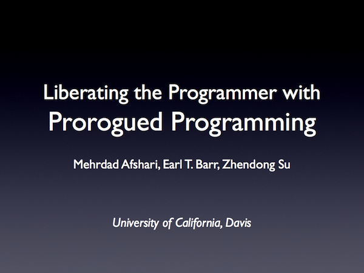

Prorogued Programming
Prorogued programming is a new paradigm closely aligned with the programmer's thought process by providing the ability to prorogue, to defer a concern, to focus on and finish the current concern, run and experiment with an incomplete program, and gradually and iteratively reify the missing parts while catching design and implementation mistakes early.
Learn More About Prorogued Programming
To learn more about prorogued programming,
SPLASH Onward! 2012 presentation and read our paper,
Liberating the Programmer with Prorogued Programming, and stay tuned! We'll update
this page shortly, with links to our prototype implementation of a prorogued programming language,
Prorogued C#, including source code. Please hang tight and spread the word! We believe prorogued
programming has the potential to change the way people program, but we need your help to get there!
